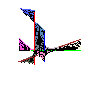

|  |
Math 666: Tropical GeometryInstructor: Frank SottileLectures: MWF 10:10 -- 11:20 AM Course Announcement Course webpage: www.math.tamu.edu/~sottile/teaching/09.2/tropical.html |
| Friday September 11 | Guest lecture: Jan Draisma : Theorem of Yuster and Yu (see link below) |
| Friday September 25 | No class: Frank in Michigan |
| Monday October 5 | Guest lecture & seminar: Josephine Yu |
| Friday October 16 | No class: Frank at AMS meeting |
| Wednesday October 28 | Guest lecture & seminar: Mounir Nisse |
| Monday November 2 | Guest lecture & seminar: Erwan Brugallé |
| Monday November 9 | Guest lecture & seminar: Gregg Musiker |
| November 20--25 | No class: Frank in Germany |
| No Final Exam, likely final projects | |